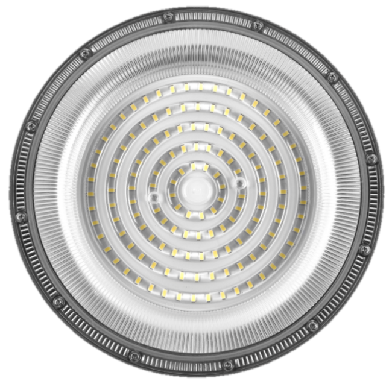
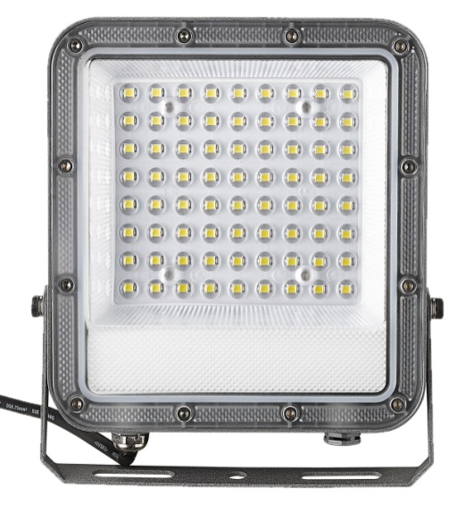
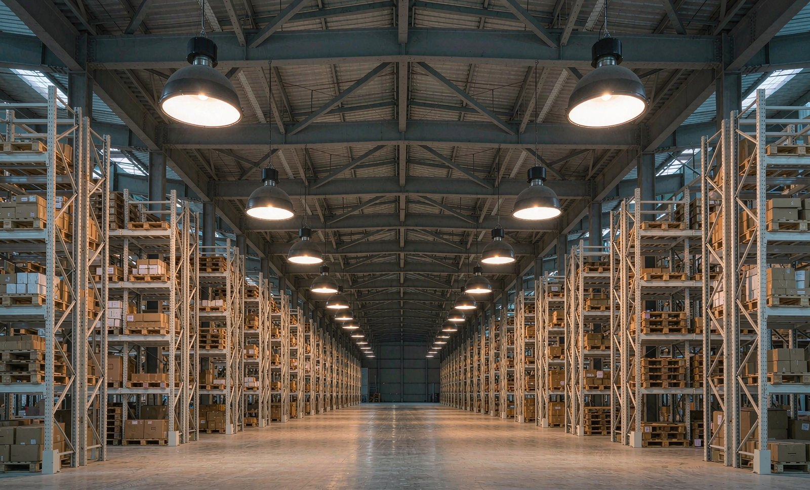
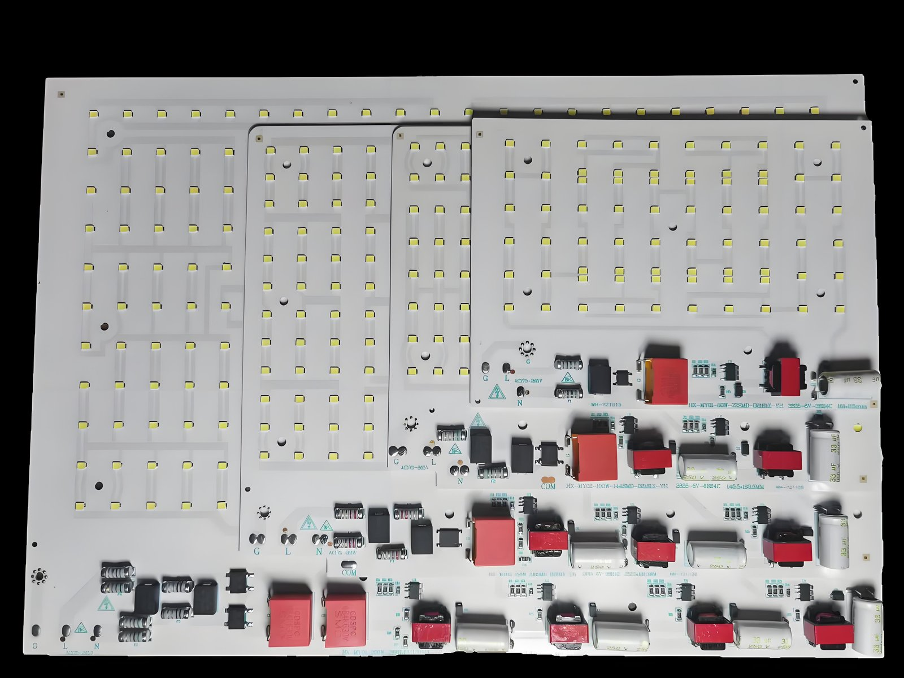
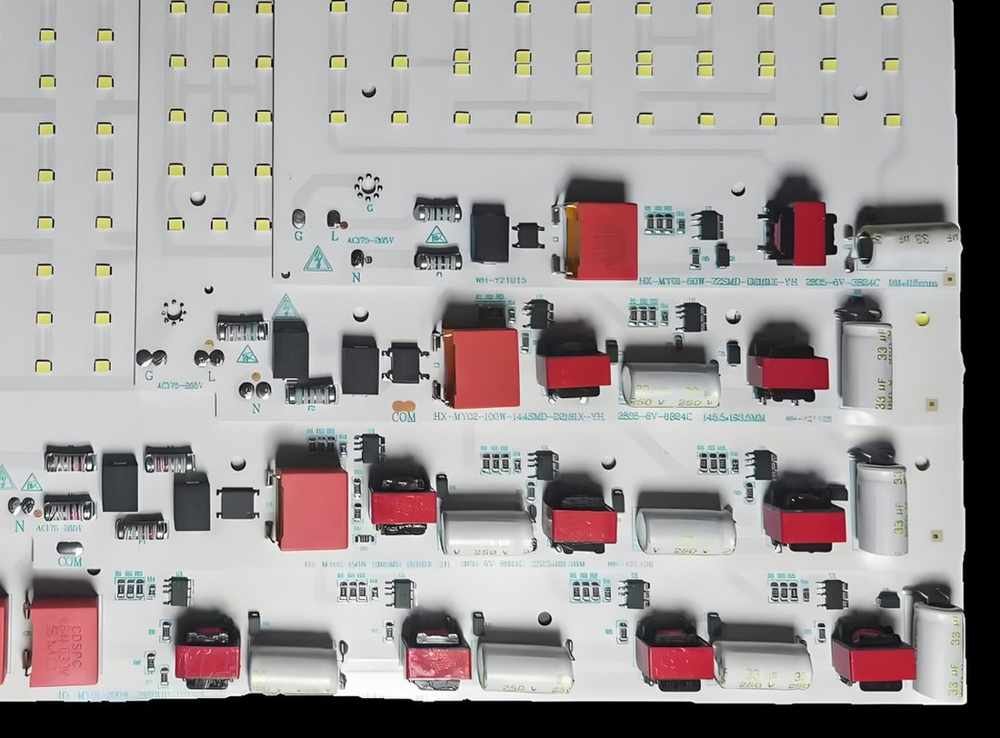
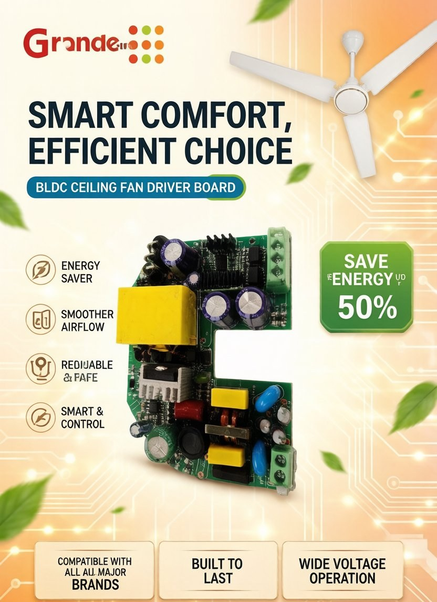

Two verified reference designs on the YE-01 platform, both lab-tested with our in-house YT2181GTE5 driver IC. Choose the product below to see its full specification, measured test data and downloadable lab report.

144V / 610mA · PF 0.956 · 4kV surge · ≥91.8% efficiency
View High Bay 100W
144V / 310mA · PF 0.957 · 4kV surge · ≥91.4% efficiency
View Flood Light 50WEvery number below comes from our own 18-page lab test reports (Rev. A2). Other wattages run on the same YE-01 platform — tell us the target and we will run the design.
| Part number | Type | Output | LED load | Driver IC | Efficiency @ 230 Vac | PF | Surge | |
|---|---|---|---|---|---|---|---|---|
| FL-YE-01W0100V144V01 | High Bay · 100 W | 144 V / 610 mA ±5 % | 24C6B · 6 V LEDs | YT2181GTE5 | ≥ 91.8 % | 0.956 | 4 kV | Details |
| FL-YE-01W050V144V01 | Flood Light · 50 W | 144 V / 310 mA ±5 % | 24C3B · 6 V LEDs | YT2181GTE5 | ≥ 91.4 % | 0.957 | 4 kV | Details |
Driver board size: 191.5 × 165 mm (100 W) · 132 × 134.5 mm (50 W). Component stress verified at ≤ 650 V (MOSFET) and ≤ 620 V (diode). Full input/output test grids, thermal data and BOM are in the downloadable reports. Part numbers follow the FL-YE-01 naming: flood light / enclosure YE-01 / wattage / output voltage.

Indian warehouses, textile units and fabrication shops run hot and dusty. The thermal path and driver margins matter more than the lumen number on the box.
Finned die-cast body, phase-change thermal pad and 105 °C capacitors; driver OTP curve matched to the housing.
High-line cutoff plus current foldback, proven on Indian feeders where neutral failure pushes line voltage above 400V.
Jet and immersion tested; gasket and lens replaceable in the field instead of scrapping the whole fixture.
We are an IC design house first. The driver inside every YE-01 luminaire is built around a Grande Micro controller — not a bought-in module.
| Luminaire output | Recommended IC | Topology | Max loading @ 176–265 Vac | Where it fits | |
|---|---|---|---|---|---|
| 40–60 W | YT2181GTE5 | BUCK HPF, internal 650V / 2.1 Ω MOS | 144 V / 310 mA — verified | Flood Light 50 W · EOL-free single-board design | Details |
| 80–110 W | YT2181GTE5 | BUCK HPF, internal 650V / 2.1 Ω MOS | 144 V / 610 mA — verified | High Bay 100 W · same IC, wider transformer | Details |
| 100–200 W | YT2305CH8 | BUCK HPF, external MOS, 440V input | 108 V / 1800 mA | Higher-wattage high bay · India voltage range | Details |
| 100–200 W | YT2305EH8 | BUCK HPF, external MOS ≤ 20N65 | 90 V / 2200 mA | Highest-current designs | Details |
| 150–200 W | YT2276EH8 | BUCK LPF, external MOS ≤ 20N65 | 162 V / 1200 mA | Cost-down version, less demanding PF spec | Details |
| Isolated 30–50 W | YT3110EHS7 | PSR_CC single-stage PFC flyback | On request | Class II metal housings, SELV output | Datasheet |
Loading values are from the Grande Micro LED driver selection table at 176–265 Vac input. Final design depends on string voltage, ambient temperature and heatsink — we will run the thermal and derating check against your housing.
Same fixture, three lenses. Mounting height and the task below decide the beam — not the lumen number.
90° at 8–10 m gives even floor coverage with fewer fixtures. 60° where racking tops need punch.
High Bay 100 W · 90° · 150–200 lx on floorNarrower beam keeps light on the work plane instead of the walls; flicker-free driver for camera inspection.
High Bay 100 W · 60°–90°Asymmetric and 120° flood for wide wash; adjustable bracket gives 180° aiming without re-drilling.
Flood Light 50 W · 90°–120°The luminaire is deliberately designed for local assembly: no glued driver, plug-in connectors, standard screws.
Semi-knocked-down. Housing, LED board and driver arrive pre-assembled and tested — your line does final QC, branding and pack-out.
Completely-knocked-down. Die-cast body, lens, gasket, LED board, driver board and hardware ship loose for full local assembly.
These are the measured results from the 18-page test reports you can download below.
Also covered in the reports: full input-voltage test grid (100–265 V+), short-circuit protection, transformer spec, PCB layout and complete BOM.
Every input-voltage point below is a real lab measurement from the 100 W High Bay report, not an estimate. Note how efficiency stays above 90 % and PF above 0.95 across the 176–265 Vac operating band.
| Vin (Vac) | Iin (A) | Pin (W) | PF | Vout (V) | Iout (A) | Pout (W) | Efficiency | THD |
|---|---|---|---|---|---|---|---|---|
| 100 | 0.056 | 3.69 | 0.662 | 125.8 | 0.026 | 3.27 | 88.57 % | 109.93 % |
| 140 | 0.433 | 51.42 | 0.851 | 137.6 | 0.341 | 46.92 | 91.25 % | 58.32 % |
| 176 | 0.637 | 97.74 | 0.906 | 143.0 | 0.609 | 87.09 | 89.10 % | 44.25 % |
| 200 | 0.514 | 95.94 | 0.938 | 142.7 | 0.612 | 87.33 | 91.03 % | 35.06 % |
| 220 | 0.456 | 95.11 | 0.951 | 142.7 | 0.612 | 87.33 | 91.82 % | 30.49 % |
| 230 | 0.435 | 95.15 | 0.956 | 142.7 | 0.614 | 87.62 | 92.08 % | 28.53 % |
| 240 | 0.414 | 95.12 | 0.959 | 142.6 | 0.615 | 87.70 | 92.19 % | 27.11 % |
| 265 | 0.362 | 94.18 | 0.968 | 142.5 | 0.612 | 87.21 | 92.60 % | 22.79 % |
| 300 | 0.259 | 74.37 | 0.952 | 139.8 | 0.494 | 69.06 | 92.86 % | 24.46 % |
| 350 | 0.184 | 58.70 | 0.914 | 137.2 | 0.394 | 54.06 | 92.09 % | 29.09 % |
| 400 | 0.144 | 49.59 | 0.863 | 135.8 | 0.330 | 44.81 | 90.37 % | 36.28 % |
| 440 | 0.119 | 42.35 | 0.815 | 134.6 | 0.285 | 38.36 | 90.59 % | 43.21 % |
FL-YE-01W0100V144V01 · 24C6B LED string · measured at 50–60 Hz. Output current holds 610 mA ±5 % from 176–265 Vac; the driver enters programmable current foldback above ~280 Vac to protect components during neutral-failure overvoltage. Full 22-point grid is in the downloadable report.
Measured component temperatures after a 90-minute soak at 32 °C ambient, at the three key Indian line voltages. The hottest part is the transformer winding, not the IC.
| Component | 176 Vac | 230 Vac | 265 Vac |
|---|---|---|---|
| IC — YT2181GTE5 (U1 / U2) | 85.2 / 84.5 °C | 82.5 / 82.5 °C | 82.9 / 83.5 °C |
| Transformer winding — EE16 (T1 / T2) | 98.4 / 96.6 °C | 100.6 / 99.5 °C | 104.3 / 103.6 °C |
| Transformer core — EE16 (T1 / T2) | 90.3 / 89.3 °C | 91.6 / 91.5 °C | 94.4 / 95.0 °C |
| Bridge — TMBF410 | 91.1 °C | 84.8 °C | 83.6 °C |
| Rectifier diode — ES2J (D1 / D2) | 83.1 / 83.2 °C | 82.3 / 81.2 °C | 83.5 / 82.0 °C |
| Fuse resistor — FR3 / FR4 | 94.0 / 100.1 °C | 80.5 / 85.8 °C | 77.4 / 82.5 °C |
| Capacitor — CE1 | 77.1 °C | 78.8 °C | 78.0 °C |
| LED module — hottest spot | 95.8 °C | 94.1 °C | 93.5 °C |
FL-YE-01W0100V144V01 · ambient 32 °C · 90-minute soak. All components stay within rated temperature with margin; the 50 W Flood Light report shows the same pattern (hottest = EE16 winding at 93.4 °C). Full per-component table in the downloadable report.
Full lab test reports, free to download — the same documents our engineers sign off.
Buy the luminaire, or just the controller inside it.

Non-isolated high-PF buck LED driver, 100–440Vac input with current foldback.
View Details
Isolated single-stage PSR PFC driver for Class II metal housings.
View Details
The same SKD / CKD model, applied to ceiling fans instead of luminaires.
View DetailsTell us the model, wattage, beam angle and annual volume — our export team replies within 1 business day with an FOB and landed-cost breakdown.
Request a Quote